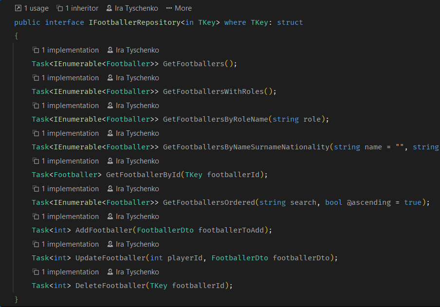
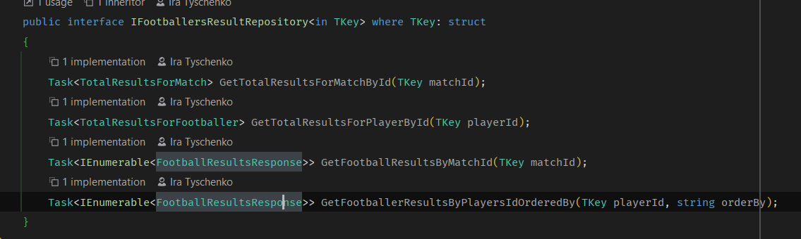
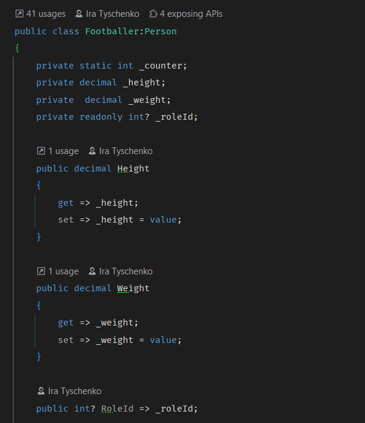
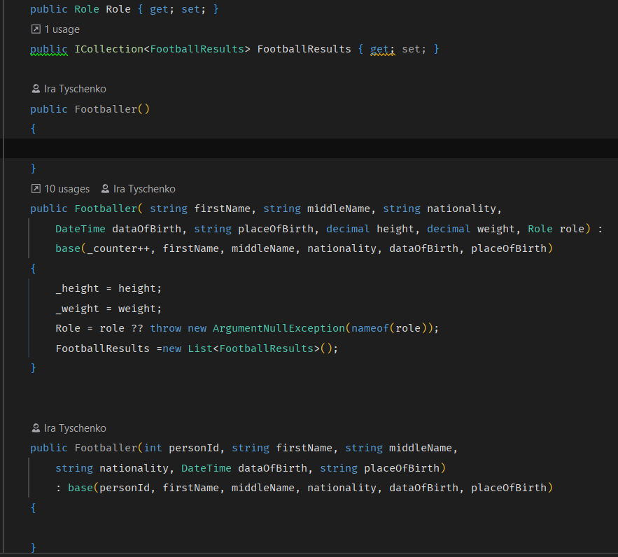
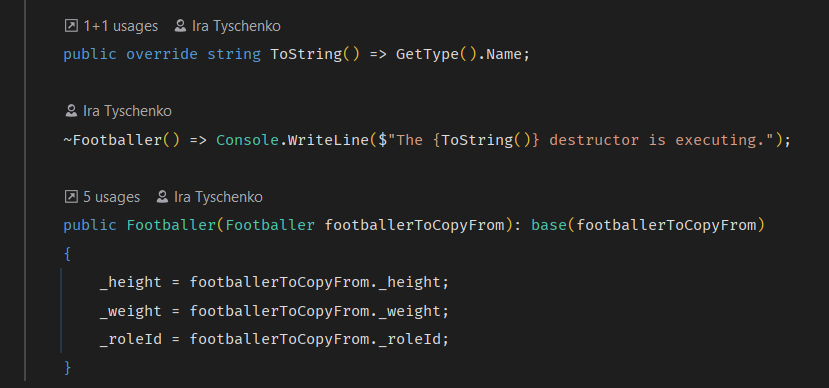
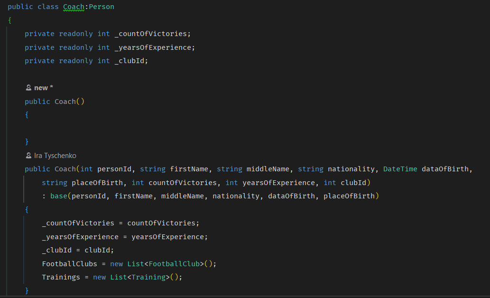
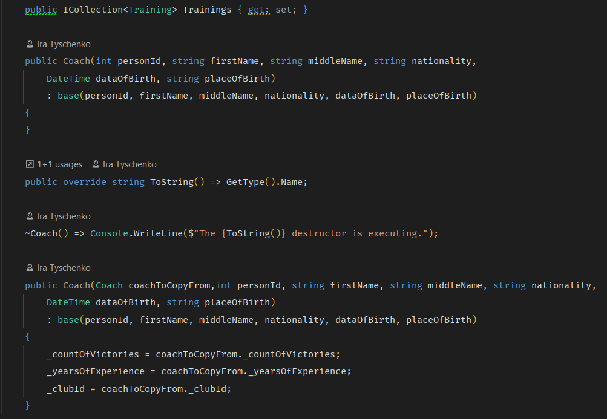
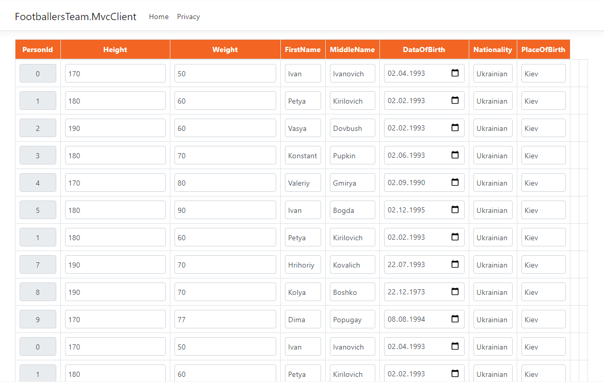
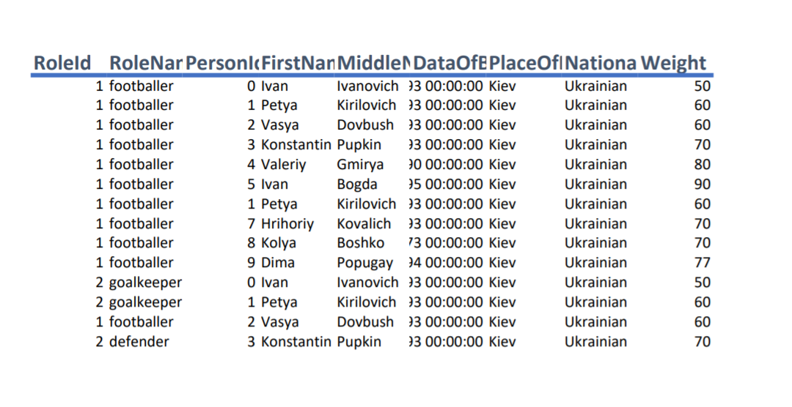

Тема: КОНСТРУКТОРИ.МОДИФИКАТОРЫ ДОСТУПУ В C# И UML. ДІАГРАМИ КЛАСІВ. ВІДНОШЕННЯ МІЖ КЛАСАМИ
Мета: Здійснити об’єктно-орієнтоване проектування з урахуванням модифікаторів доступу в C# и UML і добавлення конструкторів у діаграму класів та реалізація їх у програмному коді. Вивчити особливості використання різних видів конструкторів. Доповнити програму конструкторами різних видів.
Постановка задачі:
- Доповнити інтерфейси та реалізації класів методами-конструкторами класів (використати конструктори по умовчанню, ініціалізації (введення значень з клавіатури, завдання їх за виразами та через виклик інших методів-членів класу).
- Протестувати програму, демонструючи послідовність викликів конструкторів виведенням на екран повідомлень про створення об’єктів
- Продемонструвати створення об’єктів за допомогою різних видів конструкторів:
3.1. через ініціалізацію значень атрибутів класів списком аргументів, використовуючи конструктор ініціалізації;
3.2. через присвоєння одних об’єктів іншим того самого типу, використовуючи конструктор копіювання;
3.3. створення об’єкта за допомогою конструктора за замовчуванням.
Інтерфейс класу IFootballerRepository
Інтерфейс класу IFootballersResultRepository
Інтерфейс класу Footballer
  Інтерфейс класу Coach
 Виведення таблиці футболістів
Виведення таблиці футболістів в форматі pdf
Висновок: в ході виконання даної лаборатоної роботи я навчилась виконувати детальний опис предметного середовища, формулювати мету розробки проекту, бізнес-задачі, бізнес-процеси, сценарій дій системи. Здійснила об’єктно-орієнтовний аналіз та проектування. А також ознайомилась та застосувала на практиці інкапсуляцію,познайомилась з поняттями класів, екземплярів класу. Провела об'єктно-орієнтовний аналіз та проектування програми. Також викорситала для проектування графічне подання у вигляді діаграми класів, варіантів використання та діаграми об'єктів. А також конструювати класи за допомогою різних конструкторів.
Файл проекту